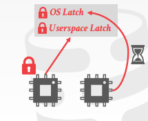
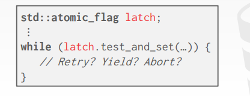

Observation
前面的操作中，都假设只有一个线程去操作数据结构，但实际操作中是有多个线程同时操作数据库的
因此需要研究多线程如何安全的执行查询
并且在实现线程安全的同时，也要注意如何优化磁盘IO
存在一些只支持单线程的数据库（比如redis，只支持单线程去操作，一个用户操作完，别的用户才能进去）
- 但redis还是比较高效的，有一部分是因为不需要考虑多线程并发的问题
Concurrency control
并发控制协议需要保证对数据的操作后，得到的是正确的结果
并发控制分为两种：
- logical correctness：一个线程能够看到它应该看到的数据（事务并发设计的概念）
- physical correctness：物理上的，数据的内部表示是否正确稳定的（本节课的重点）
事务中的锁，是基于不同的数据结构的上锁流程的
- 比如说在B+tree的结构中，从事务的角度来看，好像只是拿了当前数据位置的锁
- 而实际上，B+tree的并发协议会要求它不仅要拿当前数据位置的锁，上一层数据的锁也有可能要拿到
- 所以，我理解的是事务级别的锁实际上是将底层的锁进行了封装
Latches overview

Locks
指代逻辑上（宏观上）的锁，保护的是数据库中某个具体的数据（逻辑上的数据）
一般是被事务持有（事务上说的拿锁、释放锁都是指这个）
被修改的数据可以被回滚
同时，针对死锁有检测和预防
Latches
指代数据结构上（微观上）的锁，保护的是数据库中某个具体的数据结构
比如说上面说要锁一行数据，那么就会在那个数据结点上给一个latch
再或者说在B+树插入或删除数据的过程中，沿途也会加上很多的锁
数据不需要回滚
是被某个操作过程所持有的
对于死锁，没有具体的解决方案
Latch modes
锁的两种形式：读锁和写锁

Read mode
读锁（共享锁，S锁）；可以多个线程持有读锁
Write mode
写锁（独占锁，X锁）；只能一个线程持有写锁
Latch implementations
锁（latch，也就是mutex）的实现方式
Blocking OS Mutex
优点：简单方便（操作系统原生支持）
缺点：不能用于大规模竞争并发的场面（拓展性低）
比如cpp中的std::mutex
std::mutex m;// 底层实现是pthread_mutex_t
m.lock();
m.unlock();pthread_mutex_t的实现：
Linux接口中的pthread_mutex_t，底层实现是futex
在用户态有一个flag，如果能够拿锁，就标记这个变量flag
如果此时有新的线程来拿锁，发现变量被标记了，线程就直接陷入内核态（类似让线程sleep，可以有效的降低锁的竞争，减少系统资源的消耗）
如果上面的线程又把锁释放了，那么OS就会唤醒上面进入内核态的线程
缺点：把线程睡眠又唤醒，这种开销是比较大的
Test and set spin latch
自旋锁（Spin lock）
优点：非常高效（单个硬件指令就可以支持加解锁）
缺点：没办法应用于大规模的竞争，对缓存和OS不友好
自旋锁的实现：TAS
标志位latch，锁上的时候设置为1，解锁的时候设置为0
上锁的过程，是调用test_and_set函数
并用while检测函数返回的结果，在用户态不断地循环
因此这里对数据的操作都是原子操作（操作系统底层支持原子操作，即修改数据的过程中，别的线程是不能参与的）
而这里spin latch的实现方式test and set，是由硬件指令支持的原子操作，执行期间不会被打断
- 包含了两个步骤：把给定的内存地址设置为1，然后返回之前的旧值
- 如果执行成功就会返回1，否则返回0
建议：不要在用户态使用自旋锁，除非你真的知道它的实现
- 因为其他的线程如果一直不释放锁，就会导致竞争的线程极度的浪费资源（多个线程会不断的检测这个锁有没有被解开）
java给的一个思路就是：锁先疯狂的自旋，如果超过一定的时间，才会陷入内核态
Read-write latches
读写锁，但是不能作为锁的一种实现
- 读写锁只是类型不同，但是锁的实现方式还是只有上面两种
比如说此时有两个人加了读锁，那么后面第三个人如果想要加写锁，就要等前面两个人放掉读锁后才能继续写锁
再比如说如果此时还有人想加读锁，就不能加了，因为这里的加锁是要讲究顺序的，必须等上面的人把写锁加了，才能继续加读锁
Hash table latching
hash table是比较好加锁的
比如说开放地址hash，如果找不到slot就会往下找，因为查找的方向永远是从上往下的，不会有死锁（B+树可能会死锁）
当需要扩容的时候，就要加一个全局的写锁（global lock），因为扩容后数据结构会全部改变（不在扩容阶段，可以加局部锁）
Page latches
以page为单位加读写锁
比如说要查找一个数据D，那么就要给slot所在的page加上一个读锁，如果当前page没有，就往下一个page去找，同时也要释放当前页面的latch
java里面的ConcurrentHashMap底层就是分段hash，并发控制用的就是page latches
锁的粒度不细（不需要维护太多的锁），也保证了一定的并发性
Slot latches
以slot（槽）为单位加读写锁
粒度变得更加的细致了，更加能够避免并发冲突
缺点：要维护的latch数量太多，大多数的场景是无法承受的
go里面的map是不支持并发的，但sync.map才是支持并发的
读写分离，主的hashtable是只读的，副的hashtable是用来写的
数据写完后定期将副hashtable的数据写到主hashtable中
优点：读的时候是无锁的
Compare and swap
构造无锁的hashtable的一种方法（实现无锁的一种解决方案）
__sync_bool_compare_and_swap(&M,20,30);
// M是操作的变量的地址，20是原来这个变量上的值，30是我想要改为后得到的值
// 语义就是把M变量的值改为30实现：
- 先让OS看看当前的M是不是20，如果是20的话就要把它锁住，然后把它改为30
- 通过先比较、再交换数据，借此解决并发问题
- 由OS保证它是原子操作
- 给定原值就保证了线程之间是没有冲突的
- 返回的是true或false
CAS也是原子指令，由硬件支持的，和TAS相比，TAS是在单个内存word（或字节）上实现的

缺点：只会告诉你是否失败，但如果失败了的话就要继续自旋操作
hashtable插入值的时候可以这样做
B+tree latching
为何要研究b+ tree的并发：实现多线程的读写B+树
需求：
- 要保护结点内部的数据，不能让多线程同时的修改数据
- 结点和结点之间会有合并的操作，page之间的合并，也不能让多线程同时去操作
比如说要删除数据44，此时发现数据删除后需要合并页
而如果有人要查询41，去到原本41的位置的时候，发现没有（因为此时页数发生了合并，数据跑到另一页了）
这就造成了并发上的错乱
Latch crabbing/coupling
螃蟹协议
具体步骤：
- 先获取根节点的锁，如果发现数据在左子树，再把左子树结点的数据上锁
- 然后判断锁上了左子树后，根节点能不能解锁，如果能解锁就解锁
- 然后再从左子树找它的子树，依次循环这个流程
能解锁的条件（safe node）
- 当发生数据更新（或插入删除）的时候，不会造成节点的split（分裂）或merge（合并）
find/insert/delete
从根节点开始往下找，获取根结点的锁
再获取孩子结点的锁
然后判断孩子结点是不是一个安全的结点，如果不安全就不能放锁；安全的话就可以解锁
思考：发现每次操作都要先锁根节点，导致根节点就变为了瓶颈
- 这是一种悲观的思路
- 而绝大部分的操作其实是不会引起根节点的变化，所以不一定一上来就加锁
better latching algorithm
发现此前的的加锁方式，都是预先假设后续的操作会修改当前节点的数据，因此需要给数据加写锁
而这种思路是一种悲观的想法，这里提供一种乐观加锁的方式
search过程不变，加的依然是读锁
insert/delete的时候，加的却是读锁（如果这里加了写锁，其他线程读写数据的时候就会阻塞）
一路读锁，发现子节点 not safe的时候，释放所有的锁，然后再从头给每一步加写锁
不过这种方法也有缺点：比如说children结点会导致parent结点发生了修改，那么只能推导重来，从根节点重新给它加写锁
这种方案，本质上是认为绝大部分的操作是不会对上层的索引有修改
即大部分的操作只会修改叶子结点，不会修改上层的结点
一旦发生了修改上层结点，就回滚
不管悲观还是乐观的加锁方式，锁都是从头往尾加的
- 所以说，如果你加锁的过程中，给children加锁的时候发现加不了锁，就只能等待锁被其他事务操作释放
而B+树更加优秀的一方面，是它不仅可以支持从上往下的加锁，还支持横向的遍历加锁
Leaf node scans
因为B+树是可以支持范围搜索的，那么在多线程加锁的过程中，就有可能造成死锁的情况
比如说有两个事务，事务一find keys < 4，事务二find keys > 1

那么事务一就直接找到4的位置，然后用下面的链表从右往左开始遍历，一边遍历一遍加读锁
而事务二就找到1的位置，然后从左往右的开始遍历，加读锁
这样就可能造成死锁的情况
再比如说有一个update keys < 10，那么就可能会先锁住key为9的数据
那么就会出现，find keys > 4 拿着key为5的锁，要争夺key为9的锁
update keys < 10拿着key为9的锁，要争夺key为5的锁
由此引发死锁
B+树的latch天生不支持死锁检测
一个解决办法：只允许往一个方向操作，比如说只允许find keys > 4这个方向（从左往右加锁），不能反方向查询
- 类似哈希表一样，只能往同一个方向加锁
但如果又想要倒序的遍历，一个解决办法就是倒序索引，就反方向的构建一遍索引
所以对于B+树的索引，要添加一些规则进去
Conclusion
让一个数据结构实现线程安全，是非常困难的
在B+树上用的技巧，也可以用在其他的数据结构上的，例如skip list